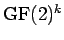
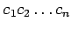
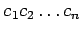
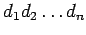
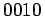

Inhalt Index DeskTop Bronstein

 Algebra und Diskrete Mathematik Elementare Zahlentheorie Codierungen Fehlerkorrigierende Codes
Algebra und Diskrete Mathematik Elementare Zahlentheorie Codierungen Fehlerkorrigierende Codes


Auch bei der Übertragung von Nachrichten in gestörten Kanälen ist oft eine Korrektur von Fehlern möglich, indem zunächst die Nachrichtenwörter codiert und nach einer eventuell fehlerhaften Übertragung wieder zu den richtigen Codewörtern korrigiert werden, so dass die ursprüngliche Nachricht durch Decodieren ermittelt werden kann. Hier wird der Fall betrachtet, dass die Nachrichtenwörter die Länge k und die Codewörter die Länge n haben und sowohl Nachrichten- als auch Codewörter Folgen von Nullen und Einsen sind. Dabei wird k auch die Anzahl der Informationsstellen und n-k die Anzahl der Redundanzstellen genannt. Jedes Nachrichtenwort ist ein Element des endlichen Körpers  und jedes Codewort ein Element von  . Zur Vereinfachung der Darstellung schreibt man einfach
. Zur Vereinfachung der Darstellung schreibt man einfach  für die Nachrichtenwörter und  für die Codewörter. Übertragen werden nicht die Nachrichtenwörter selbst, sondern die ihnen zugeordneten Codewörter.
für die Nachrichtenwörter und  für die Codewörter. Übertragen werden nicht die Nachrichtenwörter selbst, sondern die ihnen zugeordneten Codewörter.
Ein häufig benutztes Prinzip der Fehlerkorrektur ist die Methode, das empfangene Wort  zu einem Codewort zu decodieren, das sich von an möglichst wenigen Stellen unterscheidet (MLD-Decodierung). Von den Eigenschaften der Codierung und den Eigenschaften des Übertragungskanals hängt es ab, wie viele Fehler auf diese Weise korrigierbar sind.
| Beispiel |
|
Bei Verwendung eines Wiederholungscodes kann man die Nachricht 0 als Codewort 0000 darstellen. Erhält nach Übertragung des Codeworts der Empfänger das Wort , wird er vermuten, dass 0000 das ursprüngliche Codewort gewesen ist und 0 die ursprüngliche Nachricht. Erhält er dagegen 1010, dann ist eine Entscheidung nicht möglich, ob die Nachricht 0 oder die Nachricht |